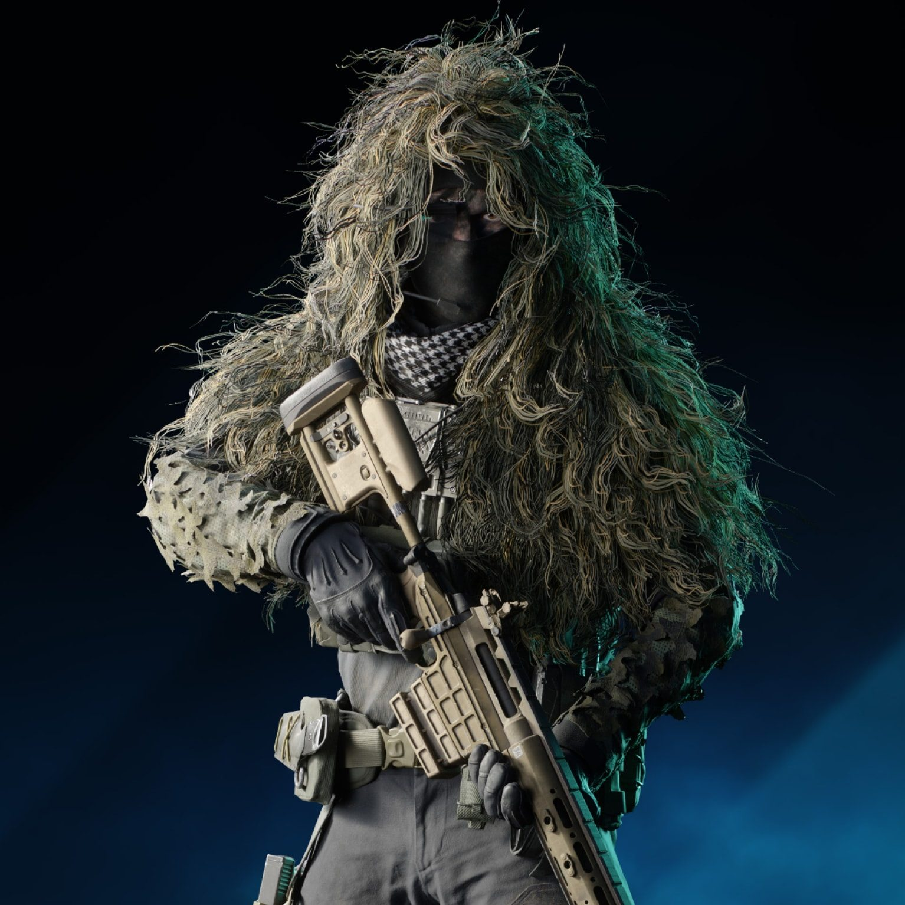
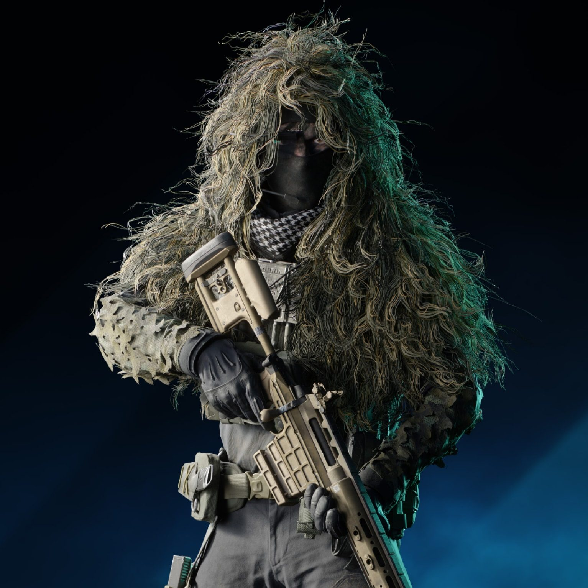

突击兵
Assault
工程兵
Engineer
支援兵
Support
侦察兵
Recon
 

突击兵兵种拥有额外的 AR 弹药和自疗装备，专门负责先锋攻击。可以放心交予他们冲进目标的任务。突击兵还可以使用爆破装备摧毁敌人的防御、入侵载具或开拓新路线。
工程兵拥有强大的修理技巧，是战斗中保证载具成功的关键。工兵专家鲍里斯、克劳福德和里斯还可以从远处干掉敌方载具、加强空间防御、为团队提供用于守住目标的装备。
支援兵对想要保持战斗状态的队友来说至关重要。急救、重新补给弹药和送出火力压制装备，支援兵保证队友们可以持续进行战斗。支援兵兵种由专家法尔克、天使和爱尔兰佬组成。
侦察兵是具有狙击和其他制高点能力的侦察兵种。白、卡斯帕和拉奥等侦察兵会避免直接对峙，更多为自己和团队寻找后切机会。他们的装备能干扰敌方系统，通过破坏和分享敌方阵地的信息制造弱点。